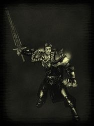

Guildes
Ombre et Lumière
Delagoth
Age : 18Sexe : Homme
Race : Humain
Faction : Alliance
Formation : Démoniste
Description : Jeune Corsaire pour le compte de son cousin, le Capitaine Wellrythorn.
Plus d'infos sur Delagoth >>>
Eloise
 Age : 27
Age : 27
Sexe : Femme
Race : Humain
Faction : Alliance
Formation : Démoniste
Description : Mon histoire, ma vie, rien de tout cela n’est réel, quand je regarde derrière moi je ne vois qu’un amas de mensonges, une vie de manipulation mais au fond quand j’y réfléchis "qui a été manipulée ?" ...
Voici ma vie .. tel qu’elle s’est réellement déroulée ... non pas celle que mes amis ou mon frère vous raconterons, il n’y a pas de fioritures pas de poudres aux yeux, juste une jeunesse qui s’est enfuie il y a maintenant trop longtemps.
Voici l’histoire d’Oselie et Eloise Vanderzar ...
Nous sommes nées il y a maintenant 26 ans, un petit rayon de soleil devait venir illuminer la famille Vanderzar, le petit Aekol à peine âgé de deux ans attendaient avec impatience la naissance de sa petite sœur. Oselie et Eloise ont vues le jour un matin d’automne, malgré la joie apportée par les naissances, une de nous deux n’était pas désirée.
Les faibles sources de revenus de nos parents ne leur permettaient pas de pouvoir nourrir trois enfants. Au termes de longues discutions au sein de la famille et aux prix de longues soirées de pleures, il fut convenu que la jeune Eloise fut confiée au vénérable Yorge Cardisse, moine de l’abbaye du Northshire.
Durant cinq années, Oselie et Aekol furent élevés par leurs parents, notre père était un valeureux combattant au service de la lumière et notre mère restait au foyer pour s’occuper de nous. L’amour qui les unissait avait été entamé la nuit ou la jeune Eloise fut abandonnée, ce mal consuma leur amour tel un poison les dévorant de l’intérieur, jusqu’à la rupture.
Père quitta la maison avec mon frère, nous laissant seules. Nous vivions dans l’ancienne Stormwind sans le moindre sou, la vie était chère et maman du se résigner à chercher un travail.
Tous les soirs je les passais enfermée dans ma chambre dans le noir, pendant que maman sortais travailler, elle me demandait de ne pas sortir pour ma sécurité, cloisonnée entre quatre murs cherchant le sommeil au milieu des cris et gémissements. Ce n’est que bien plus tard que je compris ce qui se passait durant toutes ses nuits ou j’étais témoin de sa déchéance.
Certes nous n’étions plus jamais dans le besoin, mais je perdis une partie de mon humanité.
Cette situation dura jusque le début de la guerre, elle était à notre porte, nous sentions le danger approcher peut à peu, c’est à ce moment que notre père fit son retour malgré les années, il décida de venir nous chercher toutes les deux afin de nous mettre à l’abris. Nous étions réunis à nouveau et nous partîmes pour Lordaeron, cela nous préserva au début, mais scella notre sort à jamais avec l’avènement de la Légion Ardente.
Suite au retour d’Arthas et l’assassinat du roi nous quittâmes la cité dans la précipitation rejoignant des convois désertant la cité.
Notre convois fut intercepté par la Légion, les démons nous attaquaient de toutes parts, mon père et quelques courageux guerriers nous défendaient tant bien que mal, mais le manque d’entraînement des paysans ne réussit pas à se défaire de nos opposants, j’assista au massacre de dizaine de personnes ... dont mes parents.
J’étais seule étendue au milieu des cadavres, ensanglantée, la morsure du soleil me brûlait le visage, Aekol était debout devant moi, une branche de bois à la main pour essayer de me défendre, il fut balayé d’un seul coup de griffe du démon, celui ci s’avança vers moi psalmodiant dans un dialecte qui m’était inconnu.
Soudain la douleur, fulgurance intime de l'esprit violé par le chaos... exponentielle dans son intensité... il fait noir... seule... plus jamais... le souffle du vent obscur emmené par une requiem inconnu....
...le silence...
Je me suis alors réveillée dans une petite bicoque dans les bois, Aekol s’occupait de moi depuis quelques jours, soignant mes blessures, quelque chose avait changé, quelque chose avait laissé sa marque sur mon corps et mon âme.
Une petite pierre violette incrustée à la base de mon cou était le seul témoin des évènements de cette journée.
Une fois la guerre finie nous reprîmes la route de Stormwind, participant à sa reconstruction. Une fois celle-ci achevée, Aekol entreprit son paladinat et mue par une soif de connaissance inexpliquée j’entreprit ma formation de démoniste, avant de sceller mon destin dans le sang à jamais sur les marches de l’abbaye du Northshire.
---
Je ne suivrai pas le soleil dans sa course.
Je suivrai la lune dans sa chute.
Lacérant la terre, dévorant le soleil.
Violant la lumière ..."
Plus d'infos sur Eloise >>>
Leliah
Age : 19Sexe : Femme
Race : Humain
Faction : Alliance
Formation : Voleur
Description : « Parfois, je danse et je chante… sous l’éclat de la lune…
Telle est la seule chose qui me reste de mon ancienne vie.
Je suis née quelque part, sur une route de notre monde. Mon peuple était un peuple nomade, de marchands, d’artistes, de musiciens. Ils se déplaçaient de ville en ville, de places en places, ne restant jamais au même endroit.
J’ai grandi en découvrant d’innombrables paysages, tous plus différents les uns des autres.
Oh bien sûr, ce n’était pas toujours facile… Il arrivait parfois que nous soyons exclus, voire rejetés.
Bien entendu, dans ces conditions, il est bien souvent vital de savoir se défendre pour survivre, aussi au sein de mon peuple officiaient de puissantes ensorceleuses et de vaillants guerriers, mais aussi des chasseurs, des pêcheurs et des médecins de génie. Très tôt, j’ai été initiée à tous les arts de ma tribu et j’ai vite compris que mon action permettraient à d’autres de survivre.
Nous comptions tous les uns sur les autres. Nous étions une famille.
Notre vie était simple, ponctuée de rites immuables, dont même les plus anciens ne se souvenaient pas l’origine.
Je me rappelle de ces soirées, ces nuits, de fêtes interminables, où les hommes et les femmes s’enivraient et dansaient jusqu’à tomber de fatigue. Je me rappelle de ces jours de chasse, où tous nous courrions, du plus petit au plus grand, rabattre les bêtes vers les chasseurs. Je me souviens également, des moments passés auprès de mes parents, mon père, avec qui je guettais les bêtes sauvages et qui m’enseignait tout ce qu’il y a à savoir de la nature ; ma mère, patiente, aimante, et de ses talents pour la cuisine et la médecine.
Pourquoi et comment tout cela a-t-il pris fin ?
Une nuit.
Une nuit de terreur et de folie.
Une nuit de feu, de cris, de sang…
Qui étaient-ils ? A l’époque je ne le compris pas. Perdue dans la tourmente, hurlant le nom de mes parents, j’aurais probablement péri, si une main secourable n’avait pris la mienne et ne m’avais tirée hors de cet enfer.
L’homme était fort, masqué et avait un regard dur. Ses yeux plongèrent dans les miens un moment qui me parut une éternité alors que les cris de souffrance et de mort de mes compagnons retentissaient encore autour de nous.
Brusquement, il me prit sous son bras, et m’emporta loin du brasier. Il me jeta au fond d’un chariot et m’intima d’une voix forte de ne pas bouger. Peu après, le chariot se mit en route.
Comme la nuit s’avançait, je me mis à repenser à ce que j’avais perdu ce soir et des larmes brûlantes coulèrent hors de mes yeux. Je me mis à pleurer sans pouvoir avoir la force d’arrêter.
Soudain, une main douce se posa sur mon épaule, et l’homme se mit à parler.
Je me retournait vers cette voix et dans la clarté de la lune, je vis son visage démasqué. Il était buriné et marqué par le passage du temps, mais son regard était toujours fort. Il souriait.
Il me parla longtemps. De ce qui allait changer pour moi, du bon, du mauvais, de ce qui allait être ma vie… Sa voix me berçait, me fascinait… Je l’écoutais jusqu’à l’aube, où je finis par m’endormir.
Le lendemain, nous arrivâmes enfin à destination et je découvrit une grotte immense. A l’intérieur, des milliers d’hommes travaillaient pour le compte d’une confrérie de voleurs.
L’homme me cacha et me fit entrer en douce dans la grotte. Une fois à l’intérieur, il me confia à une personne en qui il avait toute confiance et m’annonça que je devais rester cachée le temps que son ordre m’accepte en tant que recrue.
Le temps passa… En moi, la peine se fit plus douce, et les questions commencèrent à poindre, ainsi qu’une colère sans nom… Lorsque j’interrogeais Alcor, l’homme qui m’avait sauvée, il me disait de ne plus y penser et que l’avenir me souriait. Mais je savais déjà que l’avenir ne serait pas si lumineux…car je pouvais le lire dans ses yeux.
Quelque temps après, je devint recrue de la confrérie Défias, et fut enrôlée en tant que voleuse, grâce à mon agilité naturelle. Mon entraînement se passait bien et je commençais même à me faire des amis au sein de la confrérie, mais un jour, je reçu une lettre qui fit basculer de nouveau ma vie.
Cette lettre était d’Alcor, il m’y confiait son plus terrible secret, et aussi l’annonce de sa mort.. cette lettre ne devant m’être délivrée que si cette dernière était effective.
J’appris ainsi que mon peuple avait été exterminé par les bons soins de la confrérie et qu’il avait lui-même mené l’assaut.
Désemparée, puis emplie de colère, je finis par quitter la grotte.
Dès ma sortie, l’air frais, et les rayons de la lune me ramenèrent à ce que j’étais profondément. Je me souvint de ma famille et de notre vie si paisible….
Je décidais alors de me tourner vers l’alliance qui avait si souvent accueilli ma famille, mais surtout parce qu’elle était opposée aux défias, et en moi grandissait le désir de venger ma famille.
C’est en travaillant pour elle, que je fis la rencontre d’une étrange bête.. Depuis elle ne me quitte que pour vaquer à ses occupations animales et me protège le reste du temps.
Quant à moi… Parfois, je danse et je chante… sous l’éclat de la lune…. »
Plus d'infos sur Leliah >>>
Tharkal
 Age : 29
Age : 29
Sexe : Homme
Race : Humain
Faction : Alliance
Formation : Voleur
Description : Si je suis Maître d'Ombre aujourd'hui... Ce n'est pas un hasard... Retraçant mon passé... Je me rend compte que bien des choses manquent à ma personne... Une partie de mon histoire... Une partie de ma vie... Qui sera peut-être décisive... Dans le destin qui m'attend...
Mais une bonne partie de ma vie se retrouve écrite sur mon journal...
* prend un livre dans une de ses sachoches, et l'ouvre lentement, une lueur étrange dans les yeux... Ténébreuse... *
Plus d'infos sur Tharkal >>>
Lire le récit de Tharkal >>>
Wellrythorn
Age : 27Sexe : Homme
Race : Humain
Faction : Alliance
Formation : Paladin
Description : ==========================
Parents :
-Père : Sir Wellros
-Mère : Gwenden Bonie
Frères :
-Welldarrynn
-Wellrya
Soeur :
-Glaeden
Demi frère :
-Wellfow
Cousin :
-Delagoth Bonie
-Welldarîs
Tante :
-Hanna Bonie
BG mis à jour en préparation :)
Ancien texte mis dans les récits (2005)
Plus d'infos sur Wellrythorn >>>
Lire les 10 récits de Wellrythorn >>>
Yoko
Age : inconnuSexe : Femme
Race : Humain
Faction : Alliance
Formation : Guerrier
Description : * J'ouvre les yeux... dans la pénombre, l'humidité, le froid mordant. Je tente de me relever... je ne puis. Une douleur intense me foudroie. Tout mon corps irradie, et me brûle. Je comprends...
La vie revient en moi.
De longues minutes passent... Je souffre, alors que mes yeux s'habituent lentement à la pénombre ambiante, de même mes autres sens s’éveillent lentement.
Des questions m'assaillent, où suis-je ? Je ne le sais pas...
Brutalement, je m'avise que je ne me souviens de rien, que même mon nom m'est inconnu.
J'entends chuchoter près de moi tout à coup.. Je tourne la tête, ignorant la douleur qui hurle en moi.
Mes yeux découvrent deux formes indéfinissables, non loin de moi. Je tente de les appeler.. Je dois m'y reprendre à plusieurs fois avant de parvenir à laisser échapper un souffle.
Une des formes m'a entendue, se met à bouger et s'approche de moi:
-« Madame... m'entendez-vous ? » dit il en couvrant mon corps de son manteau, me faisant réaliser ma nudité.
-« Oui.. Je vous entends.. » Dis-je dans un souffle en l'observant du mieux que je peux. C'est un homme, aux cheveux gris qui dépassent de son heaume. Il me prend dans ses bras.. Me relève doucement, et me met en position assise.
Je grimace, la douleur me foudroyant à nouveau.
-« Buvez un peu », dit-il d'une voix douce, portant à mes lèvres un breuvage étrange. Je bois, découvrant alors le goût comme si cela était la première fois. Fort et sucré, le liquide coule comme une langue de feu en mon corps, l'éveillant à des sensations qui me surprennent autant qu'elles me font souffrir.
-« Rassurez-vous madame, si cela vous fait mal, c'est normal. Votre corps s'habituera bientôt. Ce n'est qu'une question de temps »
Je ne comprends pas, je l'observe, perdue, effrayée...
-« Qui êtes-vous, et qui suis-je ? Que faisons-nous ici ? »
-« Calmez vous je vous en prie Dame Yoko »
La voix qui s'élève, est une voix de femme. Douce, mélodieuse et à la fois si faible... Et cette voix, me déchire le cœur. Je tourne la tête dans sa direction, et vois un deuxième homme s'approcher, tenant dans ses bras la jeune femme qui vient de parler. Il s'agenouille, la soutenant.
Elle aussi, semble prise d'une faiblesse extrême, et un filet de sang coule de son nez. D'un geste doux et tendre, son compagnon essuie le sang et murmure:
-« Mon amour de grâce, ne te fatigue pas plus.. »
-« Mon aimé, je dois le faire et tu le sais" lui répond-elle, ne me quittant pas des yeux une seule seconde.
-"Je m'appelle Zéphiria » souffle-t-elle « Je suis prêtresse de la Lumière, et je viens de te ramener du monde des morts, Ange Yoko »
Ange... Le mot me frappe comme une épée en plein cœur..
Les larmes roulent sur mon visage alors que je me souviens de tout, moi l'ange gardien, protectrice exclusive de cet homme que j'ai aimé au-delà de ce qui était permis. Ange déchu, lorsque j'ai pris sa vie en basculant dans l'ombre et la folie, parce qu'il n'a pas voulu de mon amour…
Et de la Sanction de la puissante Lumière... Condamnée à errer entre la vie et la mort sans que je ne puisse ni bouger ni ressentir quoi que ce soit, un corps charnel exposé dans cette grotte ignorée de tous...
-« Oui... ce que tu as fait est terrible Yoko. Et ta punition continuera toujours, car tu vivras cette culpabilité encore longtemps ». Elle s'interrompt, secouée par une toux effrayante, crachant du sang.
Les deux hommes se regardent, et je peux lire leur inquiétude sur leurs visages.
-« Ne vous souciez pas de mon état... Cette résurrection était difficile... nous le savions... Sortons d'ici »
Ils nous prennent dans leurs bras, et nous sortons de la grotte...
Et la lumière du soleil me frappe, m'éblouissant, me faisant mal...
Je m'évanouis..
A mon réveil, je suis dans un lit, et l'homme aux cheveux gris est à mes côtés et m'observe d'un air grave...
-« Dame Yoko, reposez-vous. Vous resterez ici quelques temps, afin de vous habituer à votre nouvelle condition »
- « Ma nouvelle condition ? » lui dis-je alors qu'il s'apprête à sortir
-« Vous ne le savez pas encore ? Dame Zéphiria, a failli donner sa vie pour faire de vous.. Un être humain ».
Il sort, fermant la porte derrière lui, me laissant seule…*
Depuis ce jour, je me suis entraînée dur, avec ce guerrier aux cheveux gris qui m’a tout enseigné de ses techniques de combats, et j’ai accepté ma nouvelle condition. Dame Zéphiria, une fois remise, m’a prise à son service, et m’a chargée d’une mission… secrète.
Je suis dans votre monde pour cette raison.
Et je suis en quête de rédemption.
"
Plus d'infos sur Yoko >>>